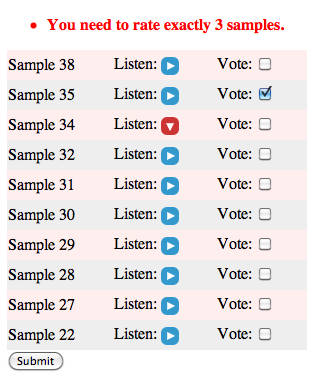
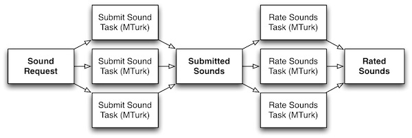

Soundsourcing: The Sound of the Crowd
After having dabbled in crowdsourcing research, I wanted to find a compelling MTurk application around which to build a real service that would simultaneously be useful, involve creative tasks, and be fun enough to capture my attention. Generating sound effects seemed to fit the bill. Creating sounds through imitation or collecting is creative, fun and (ahem, quality aside) easy due to the ubiquity of microphones. Enter experimental service soundsourcing.com.
First I had to verify some basic questions: Would turkers be willing to create and submit sound effects? Would their output be sufficiently good for someone to use in practice? Would it be possible to have some quality control process to weed out the blatantly bad submissions? Jumping into experimentation, I asked workers to imitate or record a cow mooing, paying ten cents for their efforts. After 3 days I had a set of moos:
Taking it up a notch, I requested the more obscure sound of a train leaving the station. There were many excellent submissions in the mix, although I suspect that many of them were not created by the workers but found online despite my empty threat to verify their originality and reject. My favorite is probably this train, improvised on harmonica:
As usual, the hard problem with crowdsourcing is quality control. I approach this problem with a rating step after the sound samples have been submitted, in which turkers select their top three samples from the sound set (shuffled in random order to avoid order bias). Each instance of such a task can be done cheaply (I tried $0.05), so ordering the whole set in quality becomes easy. In the future I'd like to write some JS to verify that the turker in fact listened to all of the samples. Below is the rating form presented to MTurk users:

When all of the pieces came together and some time remained, I built soundsourcing.com around this concept. I implemented the service using Django and Boto, reusing many concepts from the CrowdForge framework. The premise of the service is that people seeking very specific sound effects that they cannot find on existing sound effects sites can use soundsourcing to get their custom sounds built to order. The basic flow of HITs on MTurk looks like this:

Since the cow and train experiments, I have collected lion roars and sword slashes (submissions are in progress at the time of writing). Please check out the site, request a sound sample and submit some feedback below. Mechanical Turkers, let's make some noise!!